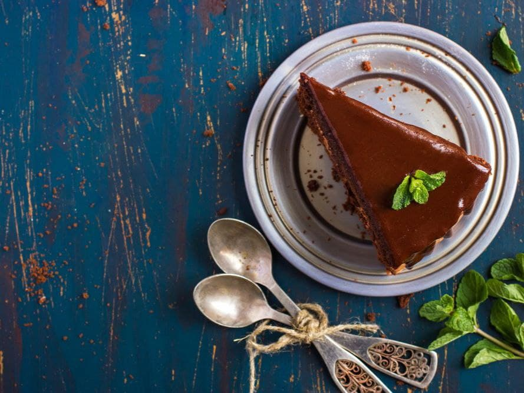

Торт "Празький"
Інгредієнти
| Інгредієнт | Кількість |
|---|---|
| Для тіста: | |
| Борошно | 2 склянки |
| Цукор | 1 склянка |
| Сметана(20%) | 200 грам |
| Згущене молого | 100 грам |
| Какао порошок | 4 ст. ложки |
| Яйця | 2 шт. |
| Розпушувач | 1 ч. ложка |
| Для крему: | |
| Вершкове масло | 200 грам |
| Яйця | 1 шт. |
| Цукрова пудра | 2-3 ст. ложки |
| Згущене молоко | 100 грам |
| Какао порошок | 2 ч. ложки |
| Ванільний цукор | 10 грам |
| Для глазурі: | |
| Шоколад | 200 грам |
| Вершкове масло | 50 грам |
| Для пропитки коржів: | |
| Цукор | 1 ст. ложка |
| Коньяк | 1 ст. ложка |
| Вода | 2 ст. ложки |
| Фруктовий джем | 50 грам |
Покроковий рецепт
1. Розітріть яйця з цукром, додайте сметану, згущене молоко і перемішайте до однорідності.
2. Просіяне борошно змішайте з какао, розпушувачем, сіллю і поступово додайте до сметані зі згущеним молоком. Тісто має вийти рідким.
3. Застеліть папером для випікання дно форми, змастіть форму вершковим маслом і рівномірно вилийте в неї тісто.
4. Випікайте коржі в розігрітій до 200 градусів духовці 1 годину.
5. Готові коржі остудіть, а потім дістаньте з форми.
6. Змішайте згущене молоко з півсклянки води і ванільним цукром, збийте яйце, з'єднайте і перемішайте до однорідності.
7. На середньому вогні, помішуючи, доведіть суміш до кипіння. Потім зменшіть вогонь, щоб маса загусла.
8. Зніміть крем з вогню, дай трохи охолонути, рівномірно помішуючи, потім накрийте кришкою і залиште охолоджуватися.
9. З'єднайте какао з цукровою пудрою і збийте з м'яким вершковим маслом. Невеликими порціями додавайте охолоджений крем у масло, продовжуючи збивати до однорідності.
10. Розріжте вздовж остиглі коржі на три однакові частини. Просочіть їх сумішшю коньяку з теплою водою і цукром.
11. Зберіть торт, промащуючи коржі кремом. На верхній корж, щоб добре лягла глазур, тонким шаром нанесіть джем.
12. Для глазурі розтопіть на водяній бані шоколад, додайте вершкове масло і перемішайте.
13. Торт полийте гарячої глазур'ю і поставте в холодильник на 10-12 годин.